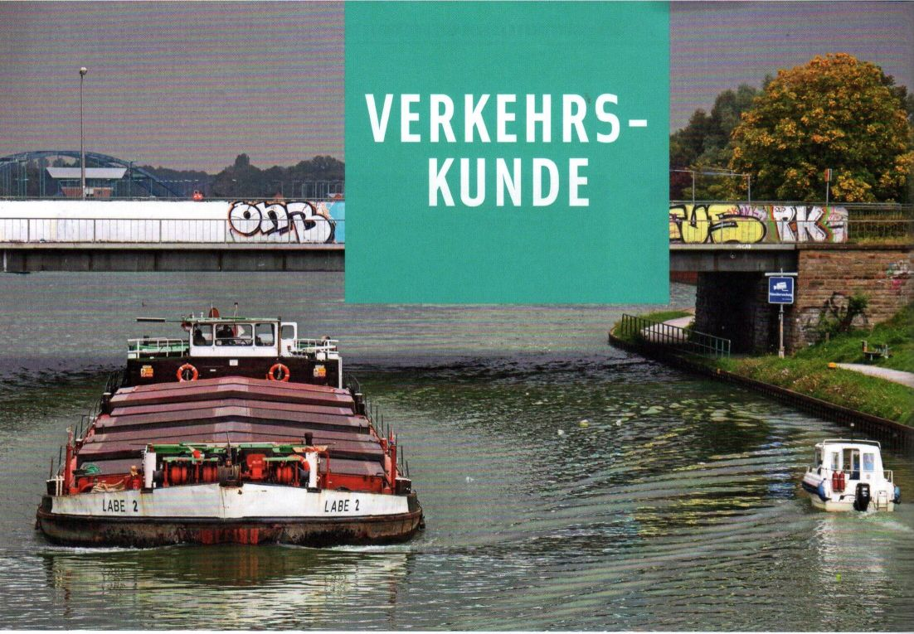
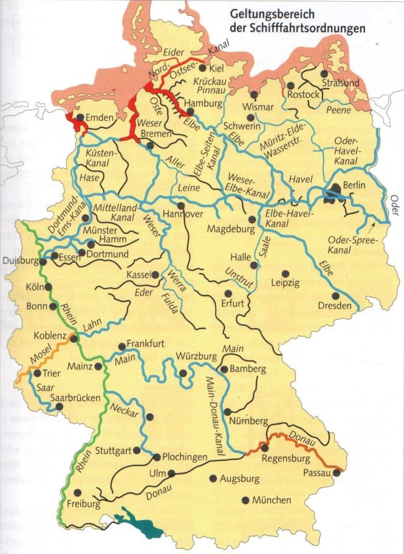

► Die Binnenschifffahrtsstraßen-Ordnung (BinSchStrO) regelt den Verkehr auf den deutschen Binnenschifffahrtsstraßen, soweit dort nicht andere Verordnungen gelten wie
► die Rheinschifffahrtspolizeiverordnung (RheinSchPVO) auf dem Rhein,
► die Moselschifffahrtspolizeiverordnung (MoselSchPVO) auf der Mosel,
► die Donauschifffahrtspolizeiverordnung (DonauSchPVO) auf der Donau.
Alle stimmen weitgehend überein, berücksichtigen aber lokale Besonderheiten der verschiedenen Flussreviere. Einige Abweichungen enthält die internationale
► Bodensee-Schifffahrtsordnung
(BodenseeSchO).
Darüber hinaus gibt es Ergänzungen für Berlin und diverse Landesgewässer, auf denen Verordnungen der einzelnen Bundesländer oder der Landes- und Kommunalbehörden gelten. Sie weichen teilweise erheblich voneinander ab und müssen hier unberücksichtigt bleiben. Auf allen Revieren können außerdem die Wasserskiverordnung und/oder die Wassermotorräderverordnung gelten.
Es ist deshalb unerlässlich, vor dem Befahren eines fremden Reviers sich jeweils bei den zuständigen Wasserstraßen- und Schifffahrtsverwaltungen oder -ämtern nach den geltenden Vorschriften zu erkundigen. Verstöße werden als Ordnungswidrigkeiten mit Bußgeld geahndet.

Binnenschifffahrtsstraßen-Ordnung (BinSchStrO)
Rheinschifffahrtspolizeiverordnung (RheinSchPVO)
Moselschifffahrtspolizeiverordnung (MoselSchPVO)
Donauschifffahrtspolizeiverordnung (DonauSchPVO) mit Donauschifffahrtsverkehrsordnung
Bodensee-Schifffahrtsordnung (BodenseeSchO)
Seeschifffahrtsstraßen-Ordnung (SeeSchStrO)